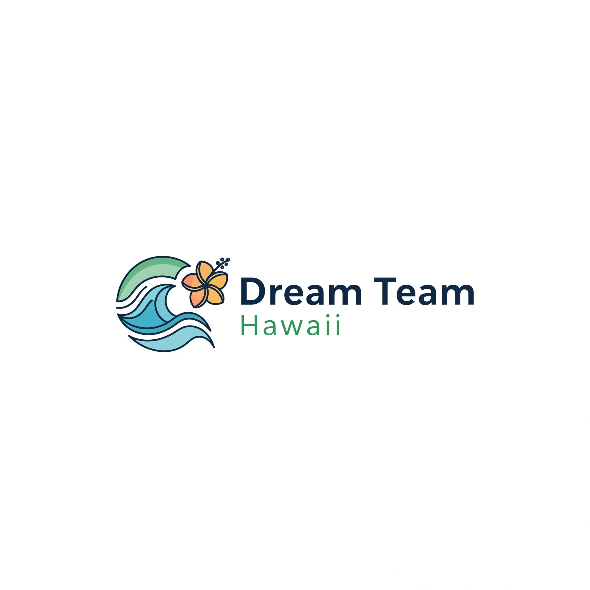
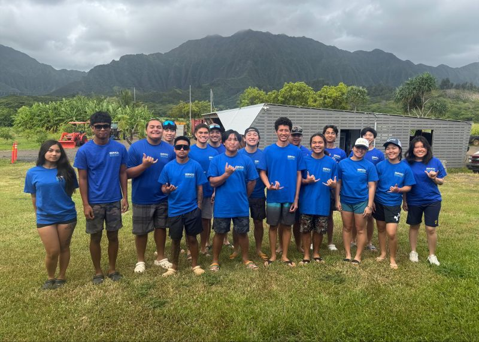
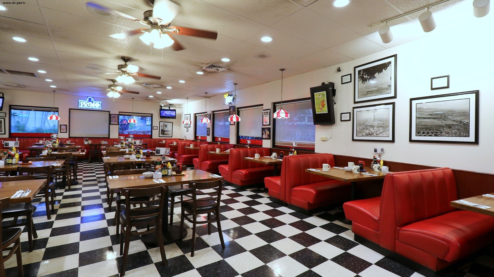

Community Engagement
Outside of my responsibilites as a Student-Athlete I try to find ways to foster community in the places that I'm at and also give back to the communites that I am a part of.
Dream Team Hawaii
Dream Team Hawaii is a federaly recognized non profit on a mission to democratize financial literacy and entrepreneurial skills. Since taking over the orginization, I have started an intiative that will bring our curriculum into the 21st century by organizing a team to design an interactive app to teach our lessons.
Team Serve
As a part of my internship, I volunteered with team Serve to give back to the Hawaii community. Two of the projects we did were harvesting luau leaves to donate to various food banks and organizing backpacks with school supplies for elementary students.
Big City Diner
In my role as a server, I have seen firsthand how food has the power to bring people together. Each shift gives me the privilege of helping families celebrate milestones, enriching reunions, welcoming visitors to Hawaii, and connecting with members of my community. I cherish the moments when a shared meal creates laughter, conversation, and lasting memories, and I find deep joy in being part of those experiences.
A-Town Elite

A-Town Elite was a local basketball team I started that competed in various leagues, capping off our summer season by participating in an international basketball tournament where we finished 3rd! This was a great way for our guys to build lifelong friendships, stay active, and learn valueable teamwork skills. All opportunites were provided at either low or no cost depending on the situation.